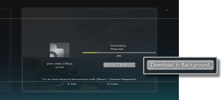
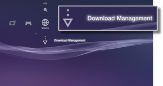

Network > Background Download
Background Download
Background download is a feature that enables you to perform other operations while downloading multiple data items or data with a large file size. This feature is available only when the [Download in Background] option is displayed on the screen that is displayed while downloading content.

Hints
- You may not be able to perform background download depending on the type of data or number of data items being downloaded.
- Installation may be required to use downloaded data such as games or video files. When downloading is finished, data that requires installation will be displayed as
 or
or  in each category.
in each category. - Background download may not be available when there is uninstalled data in the system storage.
- If the PS3™ system is turned off during a background download, the download status is saved. Downloading is automatically restarted the next time the PS3™ system is turned on and connected to the Internet.
- A background download will be temporarily stopped when any of the following operations are performed. The download will be restarted automatically once the operation has completed.
- - When playing a Blu-ray Disc or DVD
- - When using network features of online games *
- - When starting PlayStation®2 format software
- - When using voice / video chat
- - When performing a system update
- - When adjusting setting items under
 (Settings)
(Settings)
*
While a game is in process of ending, background downloading will be stopped temporarily.
Notices
- Some PlayStation®2 or PlayStation® format software titles may perform differently on the PS3™ system than they do on PlayStation®2 or PlayStation® systems, or may not perform properly on the PS3™ system.
- PlayStation®2 format discs cannot be played on some PS3™ systems. For details, refer to [Types of Playable Discs], visit the SIE Web site for your region or review the documentation that was included with your PS3™ system.
Download Management
This option is displayed only when a background download is being performed. You can check the download status or cancel the download of data that is being downloaded from  (Internet Browser) or
(Internet Browser) or  (PlayStation®Store). Select
(PlayStation®Store). Select  (Download Management) under
(Download Management) under  (Network).
(Network).

Checking download status
Select the icon of the data for which you want to check the download status, press the  button, and then select [Status] from the options menu.
button, and then select [Status] from the options menu.
Cancelling download
Select the icon of the data for which you want to cancel downloading, press the button, and then select [Cancel] from the options menu. After the download has been cancelled, it will be cleared from (Download Management).
Pausing / resuming downloads
Select the icon of the data for which you want to pause downloading, press the button, and then select [Pause] from the options menu. To resume downloading, press the button again, and then select [Resume] from the options menu.
Hints
- If you pause downloading, will be displayed with the icon.
- If you pause one download when downloading multiple data items, the next data item will automatically start downloading.
Pause all downloads
Select the icon for any download, press the button, and then select [Pause All] from the options menu.
Resume all downloads
Select the icon for any download, press the button, and then select [Resume All] from the options menu.